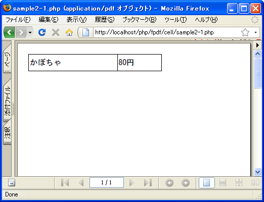
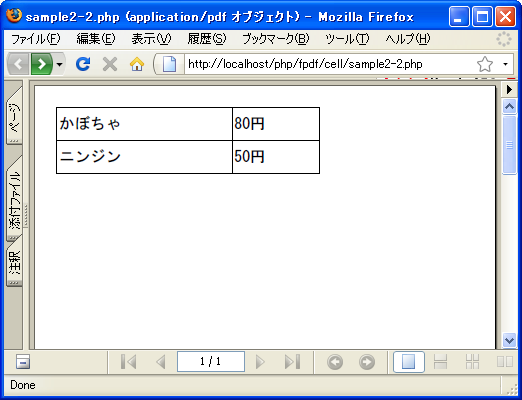
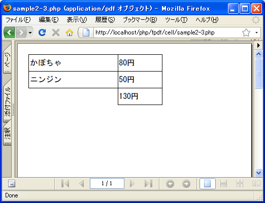

- Home ›
- FPDFを使ったPDF作成 ›
- 表の出力
表形式での出力方法
Cellメソッドの5番目の引数によって、メソッドを実行後に次の出力位置である現在の位置をどこに設定するかを指定することができます。
5番目の引数に指定できる値は次の通りです。
0: 右へ移動 1: 次の行の開始位置へ移動 2: 下へ移動
「0」を指定するとセルが出力された右に移動します。「1」を指定すると左端に戻った上でセルが出力された下へ移動します。「2」を指定するとセルのX座標は変化せずに下へ移動します。デフォルトの値は「0」です。
分かりにくいと思いますので1つ1つ確認していきます。
<?php
require('fpdf/mbfpdf.php');
$pdf=new MBFPDF('P', 'mm', 'A4');
$pdf->AddMBFont(GOTHIC ,'SJIS');
$pdf->AddPage();
$pdf->SetFont(GOTHIC,'',20);
$w1 = 80;
$w2 = 40;
$pdf->Cell($w1, 15, 'かぼちゃ', 1);
$pdf->Cell($w2, 15, '80円', 1);
$pdf->Output();
?>
まずセルを1つ出力します。次のセルの位置は指定していませんのでデフォルトの「0」が設定されたのと同じく右へ移動します。その為次のセルは前のセルの右側に出力されます。実行結果は次の通りです。

このまま次のセルを出力するとさらに右側に出力されますので、左端に戻って下へ移動するようにします。
<?php
require('fpdf/mbfpdf.php');
$pdf=new MBFPDF('P', 'mm', 'A4');
$pdf->AddMBFont(GOTHIC ,'SJIS');
$pdf->AddPage();
$pdf->SetFont(GOTHIC,'',20);
$w1 = 80;
$w2 = 40;
$pdf->Cell($w1, 15, 'かぼちゃ', 1);
$pdf->Cell($w2, 15, '80円', 1, 1);
$pdf->Cell($w1, 15, 'ニンジン', 1);
$pdf->Cell($w2, 15, '50円', 1);
$pdf->Output();
?>
2つ目のセルを出力する時に、次のセルの位置として「1」を指定しました。その結果、X座標は左端にうつりY座標は下へ移動します。結果として3番目と4番目のセルは1番目と2番目のセルの下へ出力されます。実行結果は次の通りです。

次にセルを左端に戻さずに、前のセルとX座標は同じままでY座標だけを下へ移動させます。
<?php
require('fpdf/mbfpdf.php');
$pdf=new MBFPDF('P', 'mm', 'A4');
$pdf->AddMBFont(GOTHIC ,'SJIS');
$pdf->AddPage();
$pdf->SetFont(GOTHIC,'',20);
$w1 = 80;
$w2 = 40;
$pdf->Cell($w1, 15, 'かぼちゃ', 1);
$pdf->Cell($w2, 15, '80円', 1, 1);
$pdf->Cell($w1, 15, 'ニンジン', 1);
$pdf->Cell($w2, 15, '50円', 1, 2);
$pdf->Cell($w2, 15, '130円', 1);
$pdf->Output();
?>
4つ目のセルを出力する時に、次のセルの位置として「2」を指定しました。その結果、X座標を変えずにY座標だけを下に移動させます。結果として5番目のセルは4番目のセルの下へ出力されます。実行結果は次の通りです。

このようにセルを組み合わせていくことで表形式の文字列の出力が簡単に行えます。
( Written by Tatsuo Ikura )

著者 / TATSUO IKURA
初心者～中級者の方を対象としたプログラミング方法や開発環境の構築の解説を行うサイトの運営を行っています。